graph LR
A[Populācija]
B[Izlase]
A -->|varbūtības teorija| B
B -->|statistika| A
Matemātiska analīze varbūtību teorijā, statistikā un datu zinātnē
Veronika Lohmanova
LSMAT diskusijas klubs
Saturs
- Ievads varbūtību teorijā un statistikā
- Sadalījumi
- No izlases līdz populācijai
- Hipotēžu pārbaude
Varbūtības teorija vs statistika
- Populācija (ģenerālkopa, population): nenovērojams
- Izlase (sample): novērojams
Notācija un terminoloģija
- \(X\) gadījuma lielums (random variable)
- \(x\) noteiktā vērtība
- \(X=x\) notikums
- \(R(X)\) visu iespējamu gadījuma lieluma vērtību kopa
- \(\Omega\) visu iespējamu eksperimenta rezultātu kopa
Varbūtības telpas
Par varbūtību telpu sauc objektu kolekciju \((\Omega, F, P)\), kur
- \(\Omega\): visu iespējamu rezultātu kopa
- \(F \subseteq 2^\Omega\): izmērāma kopa (measurable set)
- \(P: F \to [0, 1]\): varbūtības mēra funkcija (probability measure)
Kolmogorova aksiomas
\[P(\Omega) = 1\]
\[A\cap B = \emptyset \implies P(A\cup B) = P(A) + P(B),\ \ \ \forall A, B \in F\]
. . .
\[ \implies P(A) = 1 - P(A^c)\]
\[\implies P(\emptyset) = 0\]
Sadalījumi
Eksperiments: Motivācija
Kādā no galda spēlēm spēlētājam, kad ir viņam gājiens, vajag met spēles kauliņu. Atkarībā no cik reizes uzmetas \(6\), ir dažādas gājiena iespējas. Viena raundā jāmet kauliņš \(10\) reizes.
Runā, ka melnā tirgū pirāts nopirka maģisko kauliņu pie raganas. Mums kā spēļu sacensību organizatoriem ir aizdomās, ka pirāta metamais kauliņš uzkrīt uz \(6\) biežāk nekā parastais metamais kauliņš.
Jautājums: Ja mums ir dota informācija par katru raundu, vai mēs varam noskaidrot spēles gaitā ar kādu varbūtību tas uzkrīt uz \(6\)?
Apzīmējumi
- \(X\): Skaitlis, ko uzmet, \(R(X) = \{1, 2, 3, 4, 5, 6\}\)
- \(Y\): Cik reizes uzmeta sešinieku viena raundā, \(R(Y) = \{0, 1, \dots, 10\}\)
- \(P[X = 6] = ?\)
- \(n_1 = 10, n_2 = 100, n_3 = 1000, n_4 = 10000\): raundu skaits vienā spēlē
Eksperiments: \(n_1 = 10\)
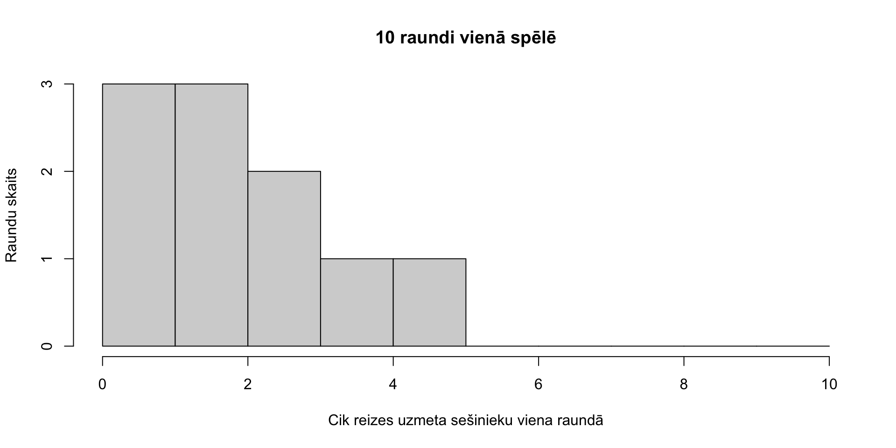
Eksperiments: \(n_2 = 100\)
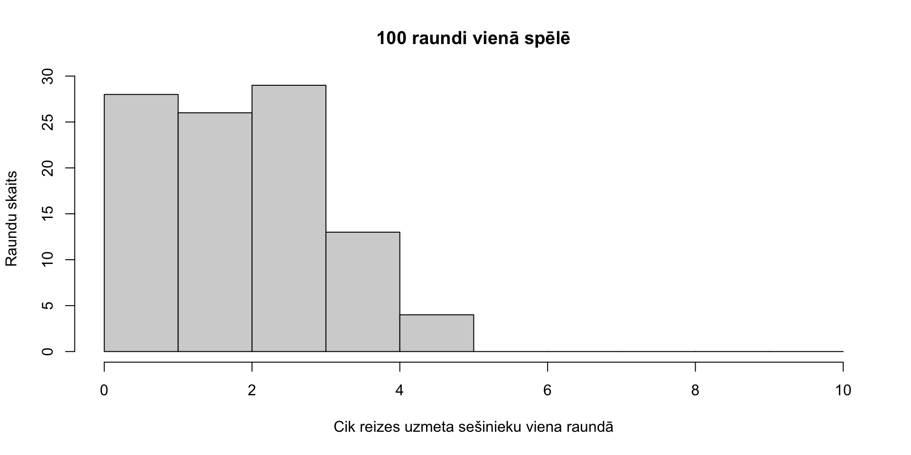
Eksperiments: \(n_3 = 1000\)
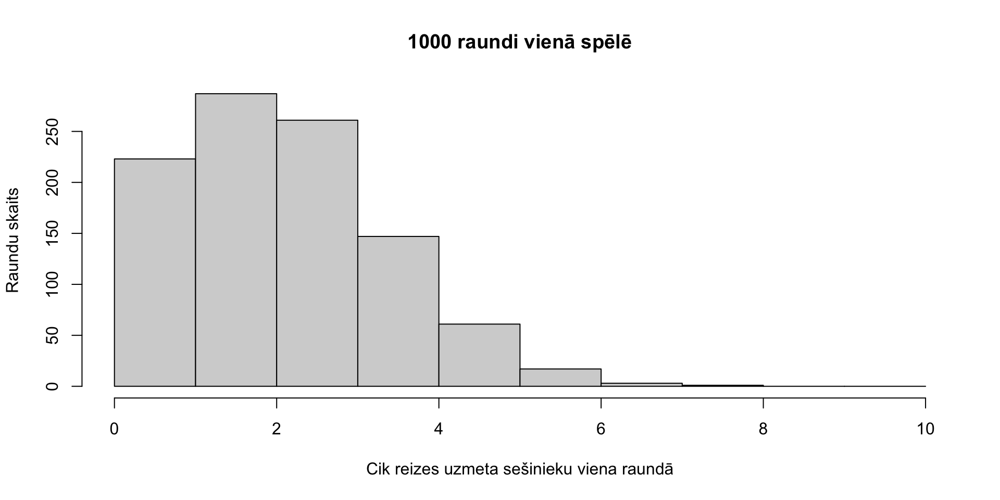
Eksperiments: \(n_4 = 10000\)
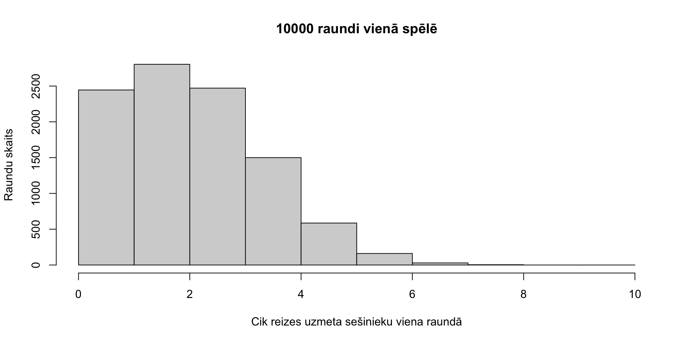
Kāpēc?
\[ Y \sim \text{Binom}(10, p) \]
\[ p = P[X = 6] \]
Ja kādu mēģinājumu atkārto \(m\) reizes, un katrā atsevišķā reizē notikuma \(A\) iestāšanās varbūtība ir vienāda ar \(p\), tad saka, ka gadījuma lielums \(Y\): «notikuma \(A\) iestāšanās reižu skaits» ir sadalīts pēc binomiāla sadalījuma likuma \(Y \sim \text{Binom}(m, p)\)
Sadalījums
- Sadalījums: funkcija kas nosaka notikumu iestāšanas varbūtību
\[\text{Gadījuma lielums} \sim \text{sadalījuma nosaukms}(\text{parametri}) \]
Diskrētie un nepārtrauktie sadalījumi
Diskrētie: \(R(X)\) kopā ir noteiktās, skaitāmas vērtības
- \(X \sim \text{Bern}(\frac12)\), \(X\) - Monēta nolaižas ar ciparu augša
- \(Y \sim \text{Binom}(10, \frac12)\), \(Y\) - Cik reizēs no 10 mēģinājumiem monēta nolaižas ar ciparu augšā
- \(Z \sim \text{Geom}(\frac12)\) - Cik mēģinājumus vajag, lai monēta pirmo reizi nolaižas ar ciparu augšā
Nepārtrauktie: \(R(X)\) kopa ir intervāls ar neskaitāmi daudz starpvērtībam
- \(X \sim \text{U}(1, 10)\) - Nejaušs skaitlis intervālā \([1, 10]\)
- \(Y \sim \text{Norm}(1.7, 0.3)\) - Augums grupā
- \(Z \sim \text{Exp}(\frac14)\) - Konsultācijas garums veikalā, kad vidējais ir \(4\) minūtes
Diskrētie sadalījumi
\[ X \sim \text{Bern}(p) \]
\[ R(X) = \{0, 1\} \]
varbūtību masas funkcija
(probability mass function)
\[p_X(x) :=P[X = x] = \begin{cases} 1-p & \text{ja}\ x=0 \\ p & \text{ja}\ x=1\\\end{cases}\]
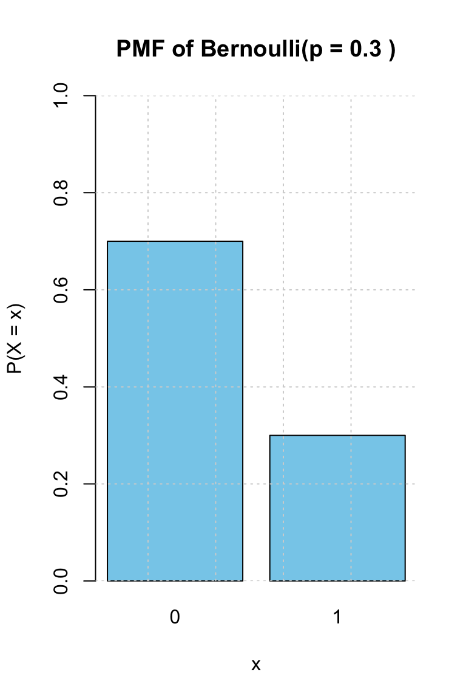
Diskrētie sadalījumi
\[X \sim \text{Bern}(p)\] \[R(X) = \{0, 1\}\] kumulatīva sadalījuma funkcija
(cumulative distribution function)
\[ \begin{align} F_X(x) &:= P[X \le x] = \sum_{i=0}^x p_X(i)\\ &= \begin{cases} 1 - p & \text{ja } x = 0 \\ 1 - p + p & \text{ja } x = 1 \\ \end{cases}\\ &= \begin{cases} 1 - p & \text{ja } x = 0 \\ 1 & \text{ja } x = 1 \\ \end{cases} \end{align} \]
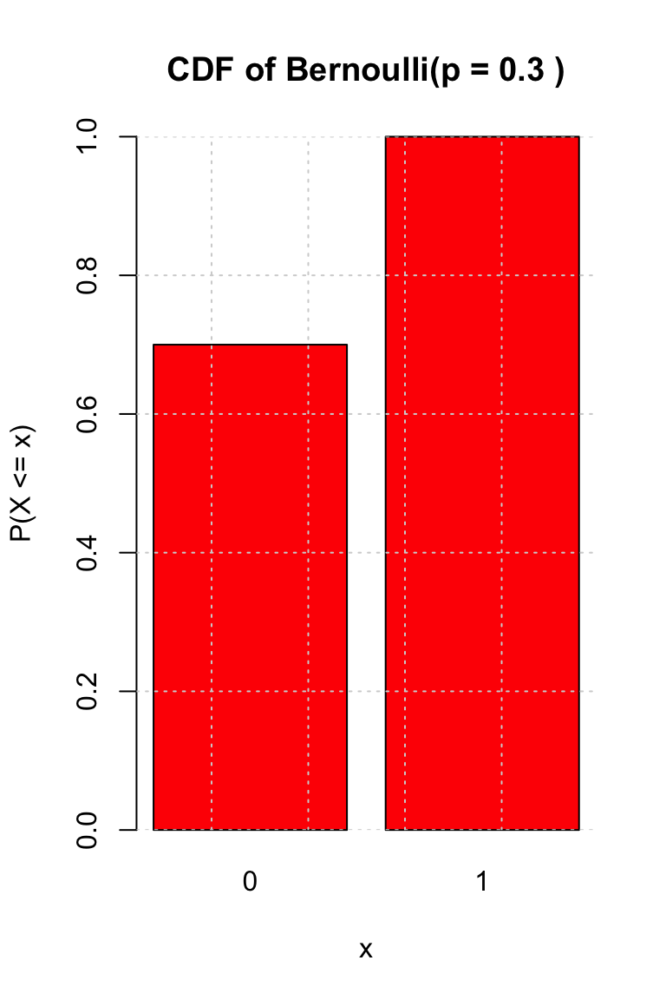
Nepārtrauktie sadalījumi
Nepārtrauktie sadalījumi
\[ P[X=x] = 0 \ \ \ \forall x \in R(X)\]
varbūtības masas funkcija Varbūtības blīvuma funkcija!
\[ f: \mathbb{R} \to \mathbb{R}^{+}_0\]
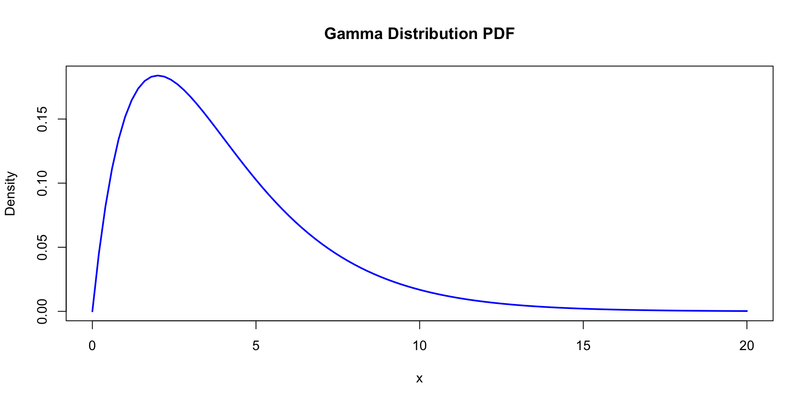
Nepārtrauktie sadalījumi
Kā tad noteikt gadījuma notikuma varbūtību?
Ar intervālu!
kumulatīva sadalījuma funkcija
\[F_X(x):= P[X \le x] = \int_{-\infty}^x f(t)\,dt\]
\[ \begin{align} \implies P[a \le X \le b] &= P[X \le b] - P[X \le a] \\ &= F(b) - F(a) \\ &= \int_{-\infty}^b f(t)\,dt - \int_{-\infty}^a f(t)\,dt \end{align} \]
Nepārtrauktie sadalījumi
\[ \begin{align} P[a \le X \le b] &= F(b) - F(a) \\ &= \int_{-\infty}^b f(t)\,dt - \int_{-\infty}^a f(t)\,dt \end{align} \]
Noteiktā integrāļa īpašība: Intervālu \([\alpha, \beta]\) var sadalīt \([\alpha, \gamma]\cup[\gamma, \beta]\), tad \(\int_\alpha^\beta f(t)\,dt = \int_\alpha^\gamma f(t)\,dt + \int_\gamma^\beta f(t)\,dt\)
\[\int_{-\infty}^b f(t)\,dt = \int_{-\infty}^a f(t)\,dt + \int_a^b f(t)\,dt\]
\[\implies \int_a^b f(t)\,dt = \int_{-\infty}^b f(t)\,dt - \int_{-\infty}^a f(t)\,dt\]
Nepārtrauktie sadalījumi
\[ P[a \le X \le b] = \int_a^b f(t)\,dt\]
Piemērs: nepārtraukts vienmērīgs sadalījums
\(X \sim U(a, b), b>a\)
\[f_X(x) = \begin{cases} \frac1{b-a} & \text{ja } \ a \le x \le b\\ 0 & \text{citādi} \end{cases} \]
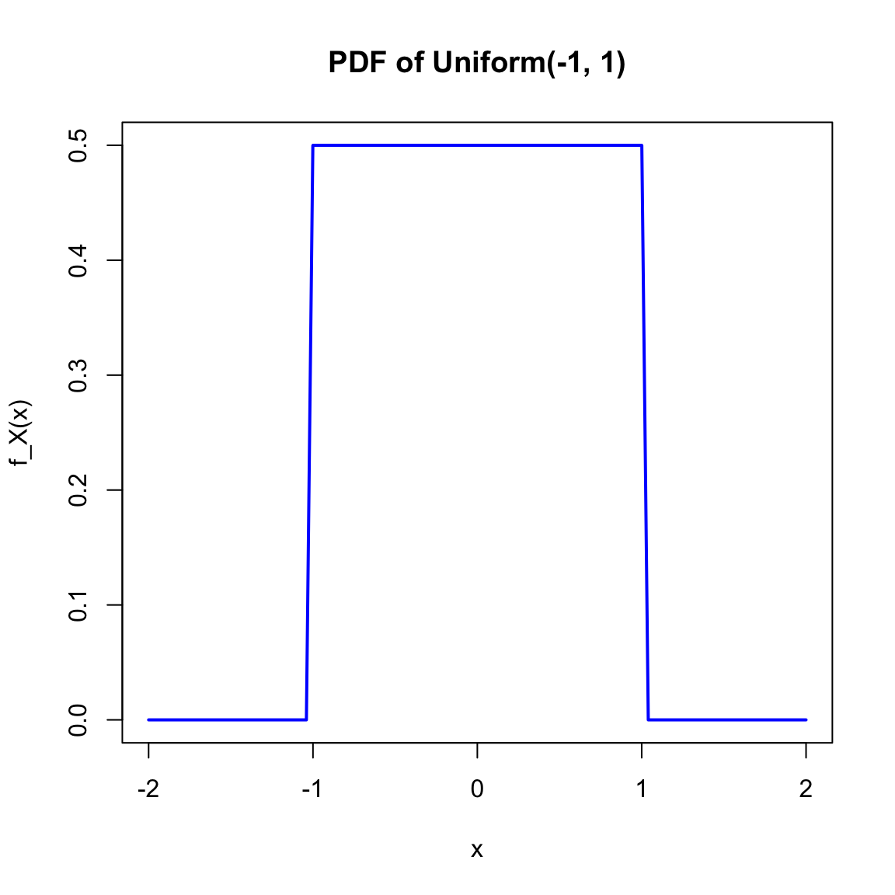
Nepārtrauktie sadalījumi: vienmērīgs
Piemērs: \(X \sim U(a, b)\) Kā atrast kumulatīvo sadalījuma funkciju?
Trīs gadījumi:
- \(x < a\)
- \(x \in [a, b]\)
- \(x > b\)
- \(x < a\)
\[F_X(x) = \int_{-\infty}^x f_X(t) \,dt = \int_{-\infty}^x 0 \,dt = 0\]
Nepārtrauktie sadalījumi: vienmērīgs
\(X \sim U(a, b), b>a\)
- \(x \in [a, b]\) \[ \begin{align} F_X(x) &= \int_{-\infty}^x f_X(t) \,dt = \int_{-\infty}^a f_X(t)\,dt + \int_a^x f_X(t)\,dt \\ &= \int_{-\infty}^a 0\,dt + \int_a^x \frac1{b-a}\,dt \\ &= 0 + \frac1{b-a}\int_a^x dt = \left[ \frac{t}{b-a}\right]_a^x = \frac{x-a}{b-a} \end{align} \]
Nepārtrauktie sadalījumi: vienmērīgs
\(X \sim U(a, b), b>a\)
- \(x > b\)
\[ \begin{align} F_X(x) &= \int_{-\infty}^x f_X(t)dt = \int_{-\infty}^a f_X(t)\,dt + \int_{a}^b f_X(t)\,dt + \int_b^x f_X(t)\,dt \\ &= \int_{-\infty}^a 0\,dt + \int_{a}^b \frac1{b-a}\,dt + \int_b^x 0\,dt\\ &= 0 + \left[\frac{t}{b-a}\right]_a^b + 0 = \frac{b}{b-a} - \frac{a}{b-a} \\ &= \frac{b-a}{b-a} = 1 \end{align} \]
Nepārtrauktie sadalījumi: vienmērīgs
\[f_X(x) = \begin{cases} \frac1{b-a} & \text{ja } \ a \le x \le b\\ 0 & \text{citādi} \end{cases} \]
\[F_X(x) = \begin{cases} 0 & \text{ja } \ x <a\\ \frac{x-a}{b-a} & \text{ja } x \in [a, b] \\ 1 & \text{ja } \ x > b\\ \end{cases} \]
\(f_X(x) = \frac{d}{dx} F_X(x)\)
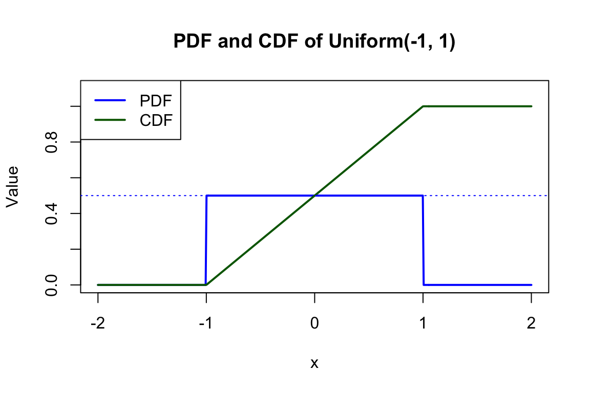
Nepārtrauktie sadalījumi: vienmērīgs
\[ X \sim U(2, 5), P[3.5 \le X \le4.2]=?\]
\[ \begin{align} &P[3.5 \le X \le4.2] \\ &= F_X(4.2) - F_X(3.5)\\ &= \frac{4.2-2}{5-2} - \frac{3.5-2}{5-2} \\ &= \frac{2.2 - 1.5}{3}\\ &= \frac{0.7}{3} \approx 23.33\% \end{align} \]
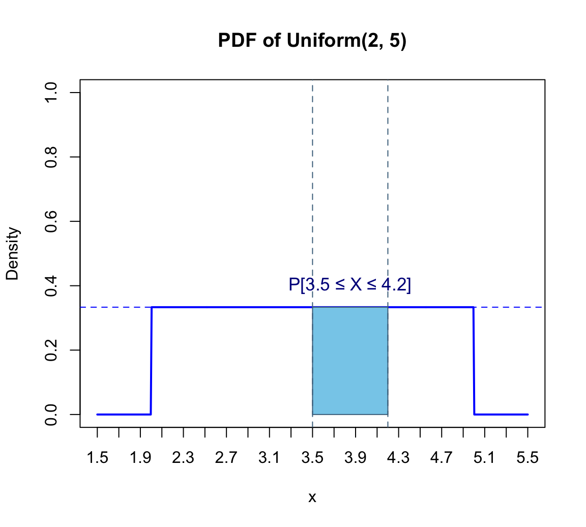
Nepārtrauktie sadalījumi
\[\lim_{x \to -\infty} F_X(x) = 0\]
\[\lim_{x \to \infty} F_X(x) = 1\]
Kādi ir kritēriji pmf, pdf un cdf?
- \(F_X: \Omega = \mathbb{R} \to [0, 1]\) ir ne dilstoša
- \(p_X: \Omega \to [0, 1]\)
\[ \sum_{x \in R(X)} p_X(x) = 1\]
\[ \int_{x \in R(X)} f_X(x)dx = \int_{-\infty}^{\infty} f_X(x)dx = 1 \]
Kāpēc matemātiska analīze varbūtību teorijā?
- Lai strādāt ar nepārtrauktām vērtībām!
Kas tālāk?
Sadalījuma momenti
Sagaidāma vērtība (svērtais aritmētiskais vidējais, expected value)
\[ \mathbb{E}[X] := \sum_{x\in R(X)} x p_X(x) \]
\[ \mathbb{E}[X] :=\int_{-\infty}^{\infty} xf_X(x)dx \]
\[ \mathbb{E}[g(X)] := \sum_{x\in R(X)} g(x) p_X(x) \]
\[ \mathbb{E}[g(X)] :=\int_{-\infty}^{\infty} g(x)f_X(x)dx \]
Īpašības:
- \(\mathbb{E}[aX + b] = a \mathbb{E}[X] + b\)
- \(\mathbb{E}[X+Y] = \mathbb{E}[X] + \mathbb{E}[Y]\)
- \(\mathbb{E}[X\cdot Y] = \mathbb{E}[X] \cdot \mathbb{E}[Y]\), ja \(X, Y\) ir neatkarīgi
Sadalījuma momenti
\[ \mathbb{E}[g(X)] := \sum_{x\in R(X)} g(x) p_X(x) \]
\[ \mathbb{E}[g(X)] :=\int_{-\infty}^{\infty} g(x)f_X(x)dx \]
Dispersija (variance) \[ \text{Var}(X) := \mathbb{E}[\left( X - \mathbb{E}[X]\right)^2] \]
\[ \implies \text{Var}(X) = \mathbb{E}[X^2] - \mathbb{E}[X]^2\]
Standartnovirze (standard deviation)
\[ \text{SD}(X):= \sqrt{\text{Var}(X)}\]
Īpašības:
- \(\text{Var}(aX + b) = a^2\text{Var}(X)\)
- \(\text{Var}(X \pm Y) = \text{Var}(X) + \text{Var}(Y)\), ja \(X, Y\) ir neatkarīgi
Sadalījuma momenti: piemērs
MD: Ja \(X\sim U(a, b), b > a\), tad kas ir \(\mathbb{E}[X]\), \(\text{Var}[X]\)?
Kāpēc matemātiska analīze varbūtību teorijā?
- Lai strādāt ar nepārtrauktām vērtībām!
- Lai varētu veikt secinājumus balstoties uz nepatraukto vērtību teorētisko modeli!
nepatraukto vērtību teorētisko modeli?
Sadalījuma momenti: piemērs
- \(X \sim \text{Po}(\lambda), \lambda>0\)
- “cik reizes noteiktā intervālā notiks notikums ar vidējo \(\lambda\)”
- \(R(X) = \mathbb{N}_0 \cup {\infty}\)
- \(p_X(x) = \frac{\lambda^x}{x!}e^{-\lambda}\)
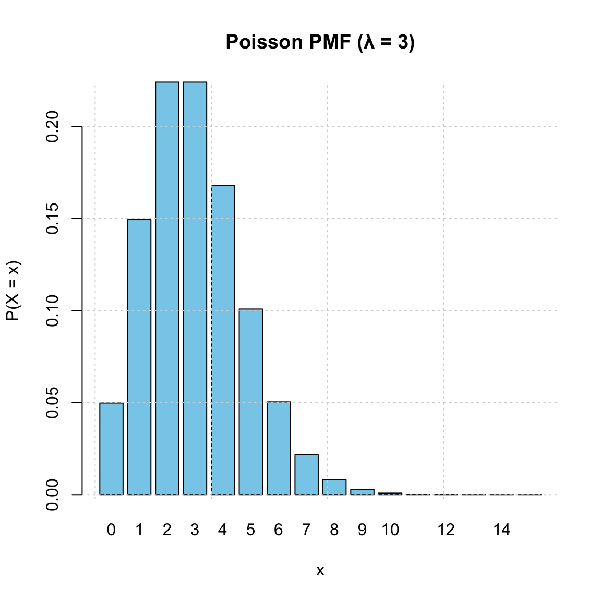
Sadalījuma momenti: piemērs
\[ \begin{align} \mathbb{E}[X] &= \sum_{x=0}^\infty p_X(x) = \sum_{x=0}^\infty x \frac{\lambda^x}{x!} e^{-\lambda} \\ &= e^{-\lambda} \sum_{x=1}^\infty \frac{\lambda^x}{x!} = e^{-\lambda} \sum_{x=1}^{\infty}\frac{x\cdot\lambda^x}{x\cdot (x-1)!} \\ &= \lambda e^{-\lambda} \sum_{x=1}^\infty \frac{\lambda^{x-1}}{(x-1)!} \end{align} \]
Teilora rinda! \(e^x = \sum_{n=0}^\infty \frac{x^n}{n!}\)
\[\dots = \lambda e^{-\lambda} \sum_{m=0}^\infty \frac{\lambda^m}{m!} = \lambda e^{-\lambda}e^{\lambda}=\lambda\]
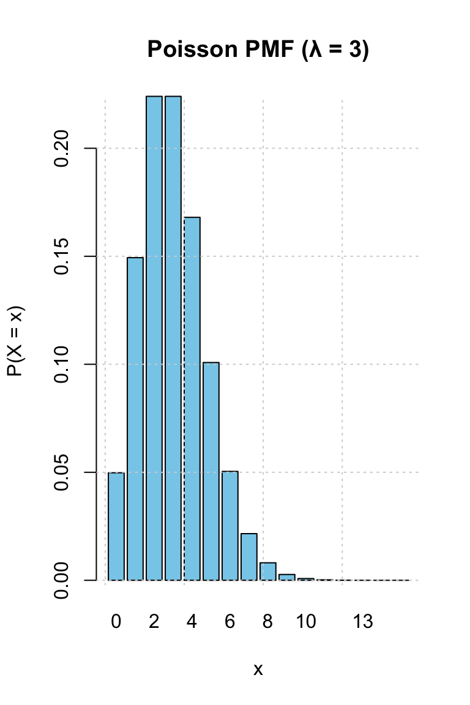
Kāpēc matemātiska analīze varbūtību teorijā?
- Lai strādāt ar nepārtrauktām vērtībām!
- Lai varētu veikt secinājumus balstoties uz teorētisko modeli!
No izlases līdz populācijai
Statistika
graph LR
A[Populācija]
B[Izlase]
A -->|varbūtības teorija| B
B -->|statistika| A
- Populācija (ģenerālkopa, population): nenovērojams
- Izlase (sample): novērojams
graph TD
A[Statistika]
B[Aprakstojoša]
C[Secinošāja]
A --> B
A --> C
Izlases statistika
Izlases statistika (sample statistic) - vērtība, ko var aprēķināt no izlases datiem
\[ \bar{X} = \frac1n \sum_{i=1}^n X_i\]
\[ S^2 = \frac{1}{n-1} \sum_{i=1}^n (X_i - \bar{X})^2\]
Pie dotiem \(\{ x_i \}_{i=1}^n\)
\[ \bar{x} = \frac1n \sum_{i=1}^n x_i\]
\[ s^2 = \frac{1}{n-1} \sum_{i=1}^n (x_i - \bar{x})^2\]
Novērtētājs
Kā mēs varam novērtēt kādu lielumu no populācijas?
Punkta novērtētāji
\[ \hat{\mu} = \bar{X} = \frac1n \sum_{i=1}^n X_i\]
Intervālu novērtētāji
\[ \left[ \bar{X} - z_\frac{\alpha}{2} \frac{\sigma}{\sqrt{n}}, \bar{X} + z_\frac{\alpha}{2} \frac{\sigma}{\sqrt{n}} \right]\]
. . .
Intervālu piemērs: ticamības intervāls!
Intervālu novērtētājs: piemērs
\[X_1, X_2, \dots, X_n \sim \text{Norm}(\mu, \sigma^2)\]
\(\sigma\) ir zināms
\(\mu\) ir nezināms
Mēs gribām uztaisīt intervālu tā, ka \(\mu\) ir tajā intervāla ar \(1-\alpha\) varbūtību!
Centrāla robežteorēma
Ja \[ X_1, X_2, \dots, X_n \] ir neatkarīgi un ir sadalīts pēc viena sadalījuma, tad \[ \lim_{n\to \infty} \frac1n \sum_{i=1}^n X_i \sim \text{Norm}\left(\mathbb{E}[X], \frac{\text{Var}(X)}{n}\right) \]
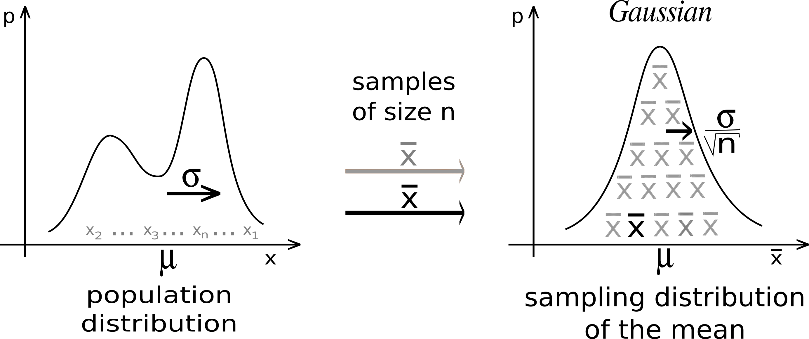
Wikipedia: Central Limit Theorem
Normālais sadalījums
\[ X \sim \text{Norm}(\mu, \sigma^2) \]
\[ f_X(x) = \frac{1}{\sqrt{2\pi \sigma^2}} \, e^{ -\frac{(x - \mu)^2}{2\sigma^2} }\]
\[ \Phi(x) = F_X(x) = \int_{-\infty}^{x} f_X(t) \, dt \]
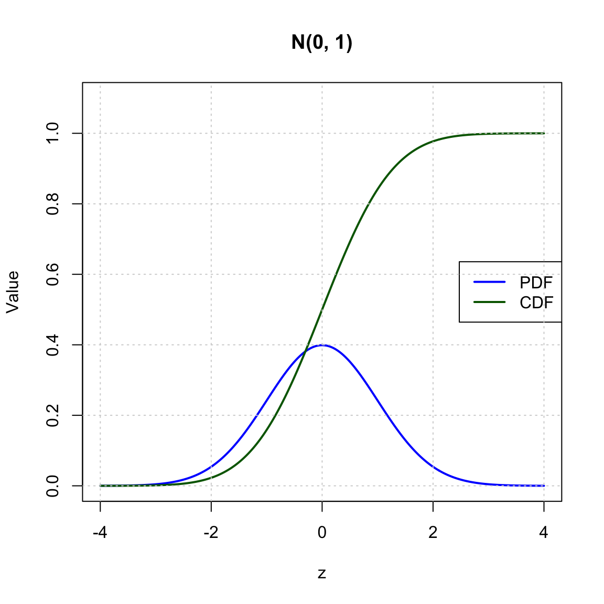
Normālais sadalījums
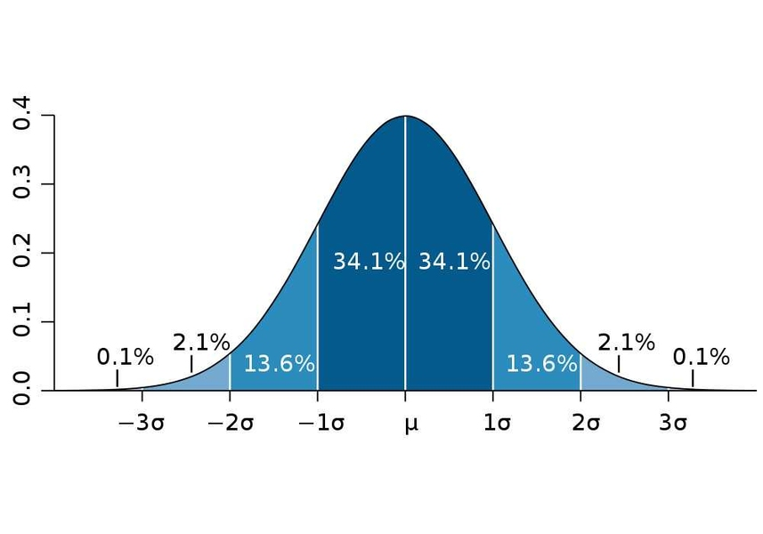
Sigma: MIT News
Intervālu novērtētājs: piemērs
\[X_1, X_2, \dots, X_n \sim \text{Norm}(\mu, \sigma^2)\]
\(\sigma\) ir zināms
\(\mu\) ir nezināms
Aproksimējam \(\bar{X} \sim \text{Norm}\left(\mathbb{E}[X], \frac{\text{Var}(X)}{n}\right) \implies \bar{X} \sim \text{Norm}\left(\mu, \frac{\sigma^2}{n} \right)\)
\[ P[a \le \bar{X} \le b] = 1 -\alpha \]
Intervālu novērtētājs: piemērs
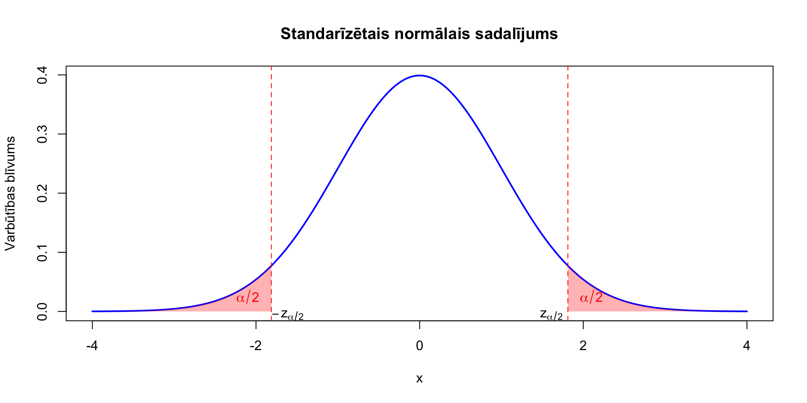
Intervālu novērtētājs: piemērs
\[X_1, X_2, \dots, X_n \sim \text{Norm}(\mu, \sigma^2)\]
\[ \begin{align} &P\left[-z_{\frac{\alpha}{2}} \le \frac{\bar{X} - \mathbb{E}[\bar{X}]}{\sqrt{\text{Var}(\bar{X})}} \le z_{\frac{\alpha}{2}}\right] = P\left[-z_{\frac{\alpha}{2}} \le \frac{\bar{X} - \mu}{\frac{\sigma}{\sqrt{n}}} \le z_{\frac{\alpha}{2}}\right]\\ &= P\left[-z_{\frac{\alpha}{2}} \frac{\sigma}{\sqrt{n}} \le \bar{X} - \mu \le z_{\frac{\alpha}{2}} \frac{\sigma}{\sqrt{n}} \right] \\ &= P\left[-z_{\frac{\alpha}{2}} \frac{\sigma}{\sqrt{n}} - \bar{X} \le - \mu \le z_{\frac{\alpha}{2}} \frac{\sigma}{\sqrt{n}} - \bar{X} \right] \\ &= P\left[\bar{X} -z_{\frac{\alpha}{2}} \frac{\sigma}{\sqrt{n}} \le \mu \le \bar{X} + z_{\frac{\alpha}{2}} \frac{\sigma}{\sqrt{n}} \right] = 1 -\alpha \end{align} \]
Hipotēžu pārbaude
Filozofija
Frekvenistu pieeja (frequenist)
Varbūtība = ilgtermiņa biežums
Ja \(6\) dienas līja lietus, tad uz \(7\) tas līs \(100\%\)
Bejiesa pieeja (Bayesian)
Varbūtība = ticamības mērs
Jāskatas pēc mākoņiem
Hipotēžu pārbaude

Hipotēžu pārbaude
- \(H_0\): bāzes/nulles hipotēze (nekas nemainas)
- \(H_1\): alternatīva hipotēze (to, ko mēs gribām pieradīt)
Mēs nevaram pierādīt hipotēzi!
Mēs varām tikai spriest, vai ir izvēlētājam nozīmes līmenim (significance level) \(\alpha\) ir pietiekami liecību, lai noraidīt/nenoraidīt nulles hipotēzi
Mēs nevaram pierādīt, ka visi gulbji ir balti. Mēs varam tikai to noraidīt, atradot vienu melno gulbji.
Two-tailed
\[H_0: \mu = 0 \]
\[H_1: \mu \neq 0 \]
One-tailed
\[H_0: \mu = 0 \]
\[H_1: \mu < \text{vai} > 0 \]
Hipotēžu pārbaude
- \(H_0\): bāzes/nulles hipotēze (nekas nemainās)
- \(H_1\): alternatīva hipotēze (to, ko mēs gribām pieradīt)
Metodoloģija:
- Aprēķināt izlases statistikas esošo vērtību varbūtību pēc \(H_0\) (p vērtība)?
- Vai tā varbūtībā ir pietiekami liela? Tad noraidīt vai nenoraidīt nulles hipotēzi!
Arī saucas Z-test vai T-test!
Hipotēžu pārbaude: piemērs
[1] 3 1 3 1 1 3 3 5 1 2 2 3 1 2 5 1 3 2 4 1 1 2 4 4 3 4 2 3 3 2 4 5 2 1 3 2 1
[38] 2 1 4 3 0 3 2 5 0 2 3 3 2 2 3 4 1 2 4 0 2 4 2 2 3 1 1 3 3 1 4 2 2 2 1 3 4
[75] 3 1 3 3 2 3 1 3 1 2 1 0 3 3 2 4 0 3 1 0 3 0 2 4 3 2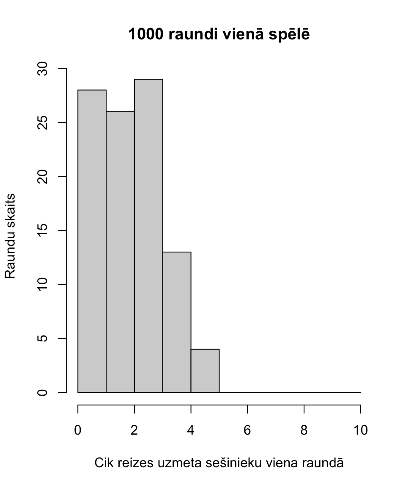
Hipotēžu pārbaude: piemērs
\[H_0: p = \frac16 \implies \mu = \mu_0 = 10 \cdot \frac16 = \frac53\]
\[ H_1: p > \frac16 \implies \mu > 10 \cdot \frac16 = \frac53 \]
\[ \alpha = 5\%, \ \ \ n=100\]
Aproksimējam \(t \sim T(n-1)\)
\(s^2 = \frac{1}{n-1} \sum_{i=1}^n (x_i - \bar{x})^2\)
\(t = \frac{\bar{x} - \mu_0}{\frac{s}{\sqrt{n}}}\)
One Sample t-test
data: pirate_100
t = 5.2086, df = 99, p-value = 5.183e-07
alternative hypothesis: true mean is greater than 1.666667
95 percent confidence interval:
2.111733 Inf
sample estimates:
mean of x
2.32 Kāpēc matemātiska analīze varbūtību teorijā?
- Lai strādāt ar nepārtrauktām vērtībām!
- Lai varētu veikt secinājumus balstoties uz teorētisko modeli!
- Lai varētu aproksimēt un taisit inferences!
Paldies par uzmanību!
Veronika Lohmanova, LSMAT diskusijas klubs